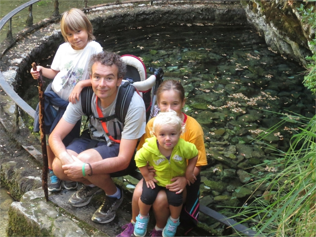

Benvinguts al meu espai personal
Aqui estic al·lucinant en el Fablab Barcelona.
Tot el que he fullejat a la Xarxa els darrers mesos sobre Espais de Creació avui 7 de setembre de 2015 està agafant forma davant dels meus ulls.
Tot plegat se'm presenta com una proposta captivadora i emocionant, alhora que disruptiva i contradictòria. El món MAKER és fascinant, però demana un tractament del temps, de l'espai, del treball i de les relacions humanes diferent a les que ara hi ha en l'entorn escolar. Adoptar una estratègia pedagògiga d'aquesta envergadura necessàriament significa transformar la nostra escola Cultura Pràctica. M'encantaria veure-ho fet realitat.
Qui soc
Sóc professor de Secundària (i aquest any puc afegir de Batxillerat) des de fa 14 anys. He portat endavant crèdits de tot tipus relacionats bàsicament amb les ciències, les matemàtiques i la informàtica. Però, sens dubte, els meus interessos més grans estan en la vessant de la innovació pedagògica.

També sóc pare de 3 fills, i un d'ells (el Job) segur que es faria soci d'un Fablab i aniria cada tarda per tal de portar a terme tot allò que barrina el seu cap, a un nivell que jo no puc seguir. Gran part del pes que estigui avui aquí es troba en explorar aquest món pensant en ell.
Em podeu trobar professionalment a Twitter a @joelpascual1973 i al blog Educar Caminant.
Un possible projecte
Sóc molt desconeixedor d'aquest món i se'm fa difícil plantejar un projecte per desenvolupar-ho mentre ens formem. Crec que el més enriquidor seria integrar el treball amb el major nombre de possibilitats/màquines.
Seria feliç fent qualsevol cosa perquè ara mateix estic més interessat en descobrir el que un fablab em pot permetre fer que realment en fer-ho. Però, coom que haig de posicionar-me d'alguna manera i com que m'agrada molt anar a la muntanya i no puc anar tant com desitjaria, que et sembla si fem una mena de reproducció del Cervino en miniatura i hi fem una cabina que es mogui de la base al mig de la muntanya?